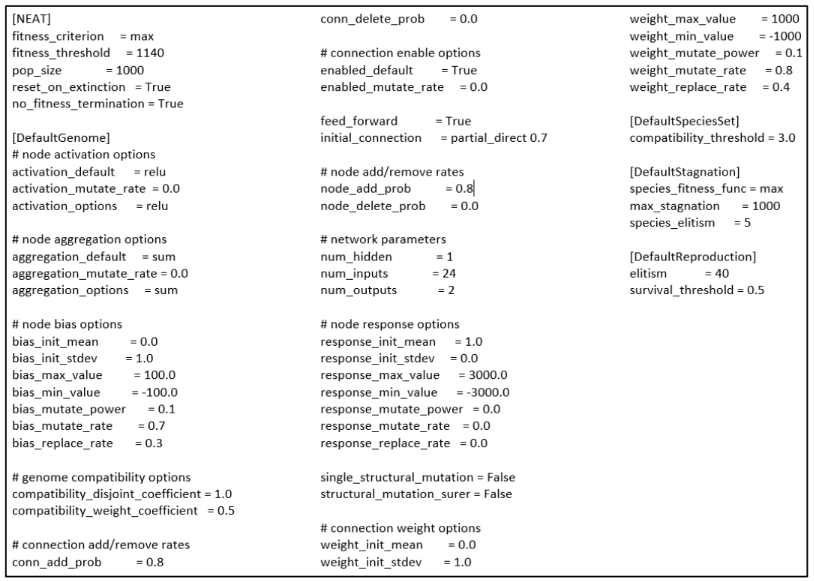

English Premier League matches from season 14/15 to 17/18 are used as dataset, Each match contains detailed data such as player ratings, team ratings, player position, and so on. Those matches are retrieved from whoscored.com
Neuroevolution of Augmenting Topologies, or NEAT for short, is a method developed by Kenneth O. Stanley for evolving arbitrary neural networks. For detailed info about NEAT, click here
The main problem of constructing a neural network is topology. Topology of a neural network refers to the way the neurons are connected, and it is an important factor in network functioning and learning. Unfortunately this is a trial and error process. The designer will usually try many design to see which worked the best.
With NEAT, topology of a neural network is no longer a problem. Using evolutionary algorithm, NEAT search for the most optimal design. NEAT also requires a fitness function, which used to determine if one network is better than the other.
After NEAT process is completed, the best network produced by NEAT is going to be optimized using Backpropagation.
After several NEAT experiments, the best features used to predict the outcome of football matches are player ratings and team ratings with configuration as follows :
Those features and configuration achieved 80% prediction accuracy (305/380) and 35% score accuracy (136/380).
After NEAT process is completed, the next process is Backpropagation. Backpropagation is done with Neataptic.js with configuration as follows:
Backpropagation boosted the accuracy of network produced by NEAT from 80% (305/380) to 81% (308/380) on predicition accuracy and from 35% (136/380) to 42% (161 / 380) on score accuracy.
Click here to view to full test result